Reach Gerudo Town (Đến Gerudo Town)
Đây là chặng cuối của chuỗi nhiệm vụ chính Regional Phenomena và cũng là vùng nặng giao chiến nhất. Xuất phát từ Lookout Landing, nạp lại món ăn, mang đủ cả đồ chống nóng lẫn chống lạnh: sa mạc Gerudo ban ngày cực nóng, ban đêm lại cực lạnh nên tốt nhất hãy đi sa mạc vào ban đêm để tận dụng đồ chống lạnh.
Lộ trình gợi ý: phóng từ Tháp Quan Sát Lookout Landing, lượn về phía nam tới Tháp Quan Sát Hyrule Field, hạ Đền Thờ Nhỏ Mayachin gần đó (đền dạy dùng Cọc — Stake) rồi đi bộ theo đường lớn vào hẻm núi. Trên đường nhớ mở Trạm Ngựa ven đường để có mốc dịch chuyển.
Mẹo: mang theo món tăng tấn công và một ít thuốc chống nóng; đổi trang bị theo giờ trong ngày thay vì cố chịu đựng.
Xem ảnh (2)
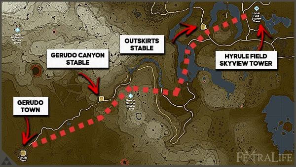
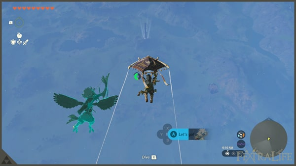
Đền Thờ Nhỏ Makurukis và Trạm Ngựa Tabantha Bridge
Trước khi vào sa mạc, ghé Đền Thờ Nhỏ Makurukis và Trạm Ngựa Tabantha Bridge. Hoàn thành đền để nhận Cung Construct Chắc và 1 Ánh Sáng Chúc Phúc, rồi nói chuyện với quản trạm để mở mốc dịch chuyển Trạm Ngựa Tabantha Bridge cho cả hành trình sau.
Đền này ngắn, chủ yếu là đẩy vật nặng và dùng Siêu Tay; nhớ lấy rương phụ trước khi chạm bàn thờ.
Activate Gerudo Canyon Skyview Tower (Kích hoạt Tháp Quan Sát Hẻm Núi Gerudo)
Từ tàn tích trên cao, men theo mép hẻm núi tới Tháp Quan Sát Hẻm Núi Gerudo. Đường đi cần leo nhiều nên canh thể lực; trên đường gặp trại Lizalfos, dọn rồi lấy nguyên liệu.
Tháp đang hỏng, Sawson đứng chờ sẵn: thang máy bị kẹt vì thùng kim loại ở trên, dùng Siêu Tay bỏ thùng ra. Lên tới đỉnh, gắn 3 thùng kim loại vào dây xích phía bên kia làm đối trọng thì Sawson sửa được tháp. Cạnh lều có Nồi Nấu đang dùng được, nấu lại món trước khi đi tiếp.
Mẹo: bật tháp xong là có thể phóng lượn thẳng tới Đền Thờ Nhỏ trong hẻm núi thay vì đi bộ.
Xem ảnh (6)
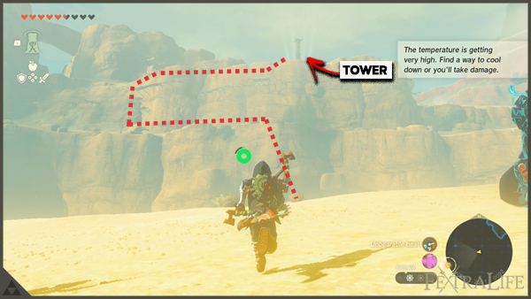
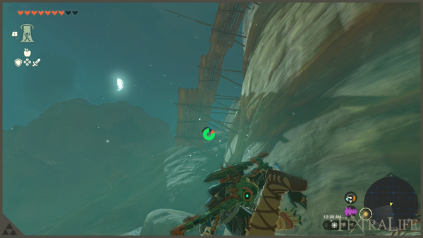
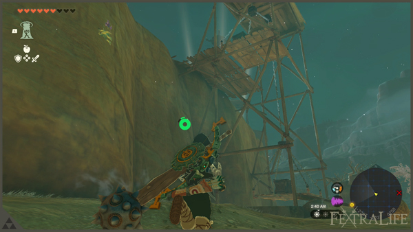
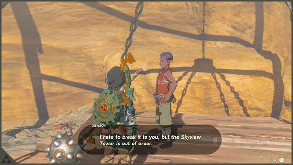
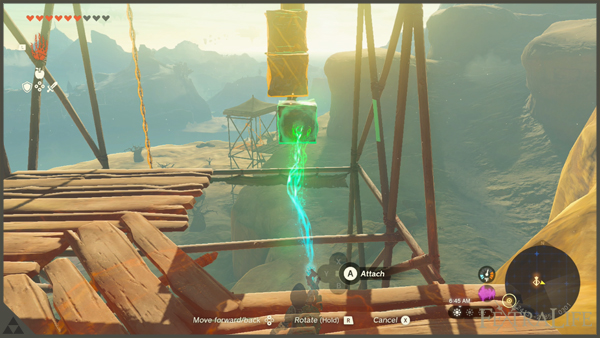
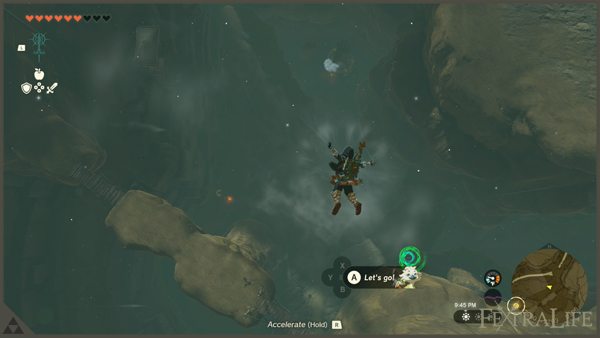
Tháp Quan Sát Cao Nguyên Gerudo và ghi chú trên bàn
Đi tiếp tới Tháp Quan Sát Cao Nguyên Gerudo. Lần này tháp không hỏng, nhưng trên bàn trong lều có mẩu ghi chú của người trước; đọc nó để mở chỉ dẫn và biết đường xuống cửa ngõ sa mạc.
Bật tháp để cập nhật bản đồ vùng cao nguyên, rồi lượn xuống phía nam.
Khám phá hang Meadela's Mantle
Trên đường xuống sa mạc, ghé hang Meadela's Mantle. Hang này là lối tắt xuyên qua vách núi xuống phía cửa ngõ sa mạc; bên trong tối nên ném Hạt Sáng hoặc ghép Hạt Sáng vào mũi tên để nhìn đường.
Dọn quái trong hang rồi đi hết lối ra, bạn sẽ đỡ phải leo lại vách đá bên ngoài.
Geoglyph và Giọt Lệ Rồng
Trong lúc lượn từ tháp, nhìn xuống tìm hình vẽ lớn trên mặt đất (geoglyph) và tới chỗ đám nước nhỏ để nhặt Giọt Lệ Rồng (Dragon's Tear).
Xem xong ký ức, bạn biết thêm một mảnh cốt truyện: Ganondorf dẫn đầu người Gerudo thề trung thành với Vua Rauru, công chúa Zelda nghi ngờ ý đồ của họ còn nhà vua thì bảo không có gì đáng lo.
Cửa ngõ Sa mạc Gerudo
Theo đường chính xuống Cửa ngõ Sa mạc Gerudo; nếu muốn đi nhanh hơn trong cát, ghé Trạm Ngựa Hẻm Núi để thuê Hải Cẩu Cát (sand seal). Từ đây bắt đầu địa hình sa mạc thật sự, ban ngày nắng gắt và ban đêm lạnh.
Trên đường có thể ghé chợ nhỏ ven đường trước khi tới Kara Kara.
Clear Turakamik Shrine (Đền Thờ Nhỏ Turakamik)
Đền Thờ Nhỏ Turakamik xoay quanh điện và dẫn điện, dễ hơn mấy đền trước. Mục tiêu là nối các quả cầu sắt để dòng điện chạy qua và mở cửa.
Xem ảnh (1)
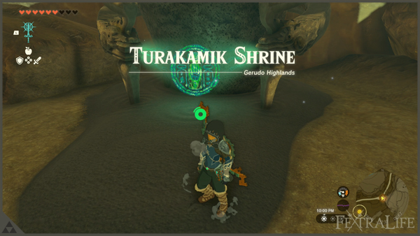
Bài giải đố 1
Hai quả cầu sắt bị xích vào tường, dây quá ngắn để nối trực tiếp. Dùng Siêu Tay kéo quả cầu bên trái sang phải, giữ khoảng 5 giây rồi thả; ngay sau đó dùng Hồi Tưởng lên quả cầu vừa kéo để nó lơ lửng tại chỗ, rồi nhanh tay Siêu Tay nối với quả cầu còn lại.
Xem ảnh (1)
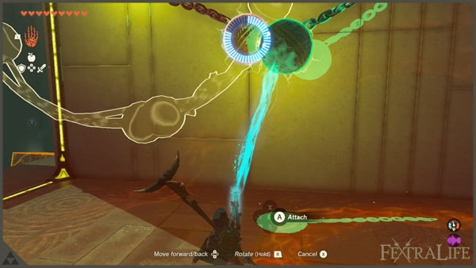
Bài giải đố 2
Treo quả cầu sắt lên cột kim loại gần nhất để chạm điện, rồi tháo thanh kim loại khỏi bánh răng phía sau và nối hai cột lại. Điện chạy qua thanh kim loại, cửa mở, bạn nhận 1 Ánh Sáng Chúc Phúc.
Xem ảnh (1)
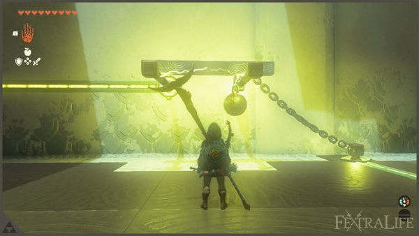
Visit Gerudo Canyon Stable (Trạm Ngựa Hẻm Núi Gerudo)
Dịch chuyển về Đền Thờ Nhỏ Turakamik rồi lượn sang Trạm Ngựa Hẻm Núi Gerudo. Trong trạm có rất nhiều thùng gỗ, dọn hết rồi nói chuyện quản trạm để nhận 1 điểm Pony và hoàn thành nhiệm vụ phụ Piaffe Packed Away.
Mẹo: trước khi tới đây nên ghé Lookout Landing đổi Ánh Sáng Chúc Phúc lấy Bình Máu, vì vùng này sắp vào chuỗi trận đánh.
Xem ảnh (1)
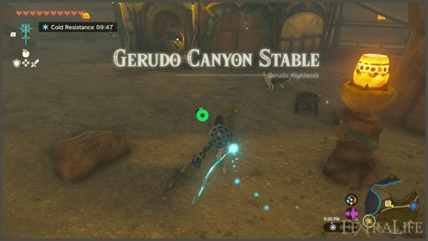
Visit Kara Kara Bazaar (Chợ Kara Kara)
Ra khỏi trạm, đi theo đường chính tới chợ Kara Kara. Dọc đường có chỗ thuê Hải Cẩu Cát để trải nghiệm cưỡi trên cát.
Tới chợ thì tiếp tế món ăn và mua Băng Đô Desert Voe (khoảng 450 Rupee) để mặc ban ngày; mấy chặng sau toàn nắng gắt.
Xem ảnh (1)
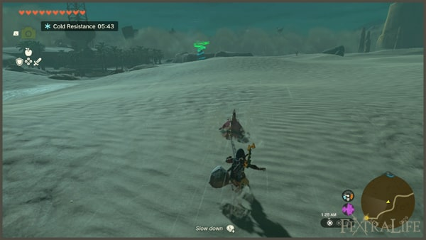
Clear Mayatat Shrine (Đền Thờ Nhỏ Mayatat)
Đền Thờ Nhỏ Mayatat dạy cách di chuyển trên cát bằng Thiết Bị Zonai. Đền chỉ có hai bài giải đố, làm xong nhận 1 Ánh Sáng Chúc Phúc.
Xem ảnh (1)
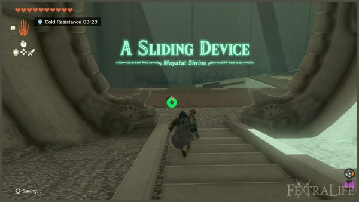
Bài giải đố 1
Dùng Hồi Tưởng lên chiếc xe trượt (Sled) đang lao đi để nó chạy ngược lại, nhảy lên và đi tới khu tiếp theo.
Xem ảnh (1)
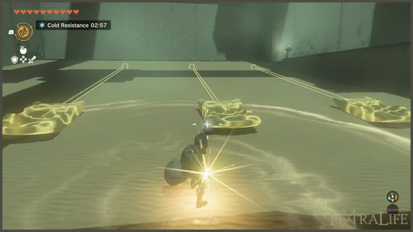
Bài giải đố 2
Ghép 1 Cần Lái và 2 Quạt vào chiếc xe trượt để thành xe chạy cát, phóng sang phía tây lấy rương 10 Mũi Tên, rồi qua bờ bên kia bằng một xe khác. Chạm bàn thờ nhận Ánh Sáng Chúc Phúc.
Xem ảnh (1)
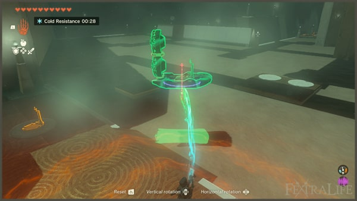
Reached Gerudo Town (Đến Gerudo Town)
Đoạn đường từ chợ Kara Kara tới Gerudo Town nằm trong bão cát nên bản đồ bị nhiễu, phải đi bằng mắt. Từ chợ, nhìn dòng cát chảy ở rìa rồi cưỡi lên để lên cao, bạn sẽ thấy phần trên của Gerudo Town với một Đền Thờ Nhỏ nhô lên.
Muốn hạ Gibdo — quái phổ biến ở đây — phải bắn mũi tên ghép Quả Lửa để phá lớp vỏ, hoặc dùng nguyên tố sét; sau khi vỏ nát mới đánh thường được.
Vào phòng ngai, dùng Xuyên lên tới đỉnh Gerudo Town, rồi đi hạ Đền Thờ Nhỏ tiếp theo.
Xem ảnh (3)
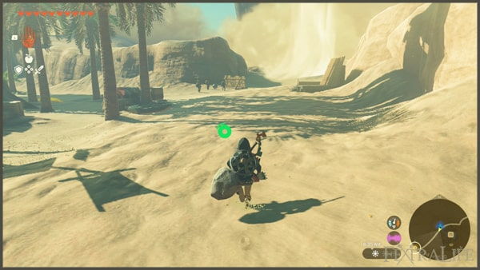
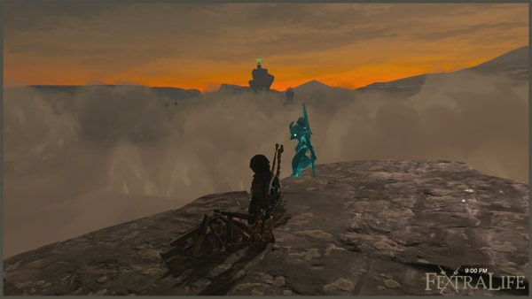
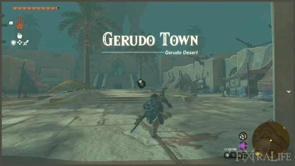
Clear Soryotanog Shrine (Đền Thờ Nhỏ Soryotanog)
Đền Thờ Nhỏ Soryotanog nằm ngay trên đỉnh Gerudo Town. Làm xong đền này bạn có mốc dịch chuyển nhanh ngay trong thành, rất tiện cho mấy chặng sau. Phần thưởng là 1 Ánh Sáng Chúc Phúc.
Xem ảnh (1)
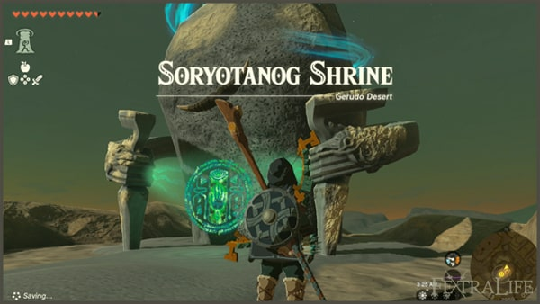
Infiltrate the Lower Chambers of Gerudo Town (Lẻn vào khu ngầm Gerudo Town)
Vào thành qua cổng chính, bạn bị coi là người lạ nên phải đi đường ngầm. Tới khu phía tây, tìm sợi dây buộc vào cái nồi rồi dùng Xuyên để lên khu bên trong.
Dân trong thành phản đối, cho tới khi Buliara xuất hiện và nhận ra Link; bà cho quân hạ vũ khí và chỉ đường tới chỗ Riju.
Xem ảnh (1)
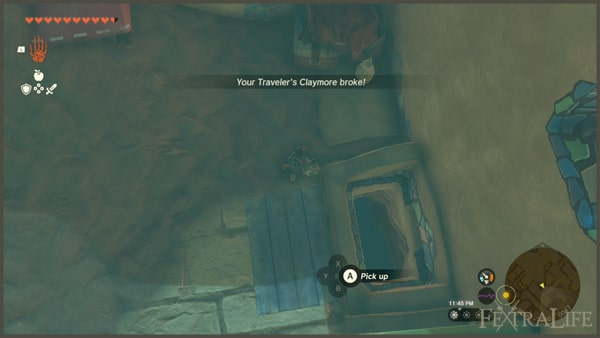
Track Riju in North Gerudo Ruins (Tìm Riju ở Tàn tích Bắc Gerudo)
Dịch chuyển về Đền Thờ Nhỏ Soryotanog rồi lượn tới Tàn tích Bắc Gerudo. Gần chỗ Riju có Cung Hiệp Sĩ, nhặt trước khi nói chuyện.
Riju nhờ bạn cùng luyện tập: điều khiển tia sét của cô ấy đánh trúng bia. Hãy luyện kỹ vì đây là cơ chế chính để hạ Gibdo về sau — bắn mũi tên vào vòng năng lượng để dẫn sét.
Xem ảnh (2)
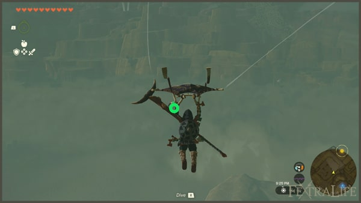
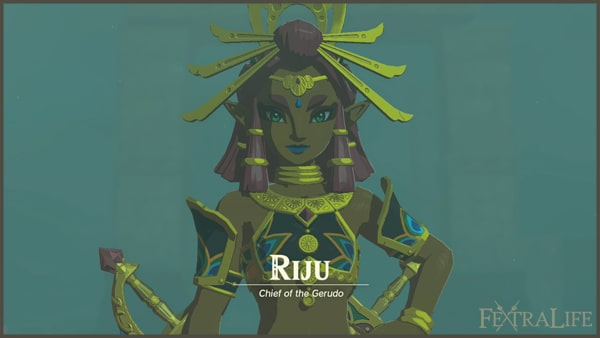
Secure Kara Kara Bazaar (Giữ chợ Kara Kara)
Tin báo chợ Kara Kara bị Gibdo tấn công. Dịch chuyển về Đền Thờ Nhỏ Mayatat rồi tới chợ.
Riju tạo vòng năng lượng, bạn bắn mũi tên xuyên qua đó để dẫn sét xuống, mỗi phát dọn được cả cụm Gibdo. Lặp lại vài đợt cho tới khi lộ ra cột cát phát sáng tím — đó là nguồn sinh ra Gibdo; dẫn sét của Riju vào cột để phá.
Defend Gerudo Town (Bảo vệ Gerudo Town)
Đợt Gibdo lớn chuẩn bị đổ vào thành. Nhận vật tư ở góc đông bắc thành (Rupee, vũ khí, Thiết Bị Zonai, nguyên liệu), rồi gặp Padda đặt chướng ngại vật ở cổng bắc.
Sang góc tây bắc gặp Teake để bố trí quân: Đội Giáo giữ cổng tây, Đội Kiếm giữ cổng đông, Đội Pháo giữ cổng bắc.
Khi trận đánh nổ ra: chạy tới cổng đông dọn Gibdo và phá cột cát, sau đó vòng qua cổng bắc xử lý Gibdo lọt vào thành. Chú ý Gibdo bay vì chúng dễ vượt hàng phòng thủ; luôn giữ Riju không bị quây.
Xem ảnh (3)
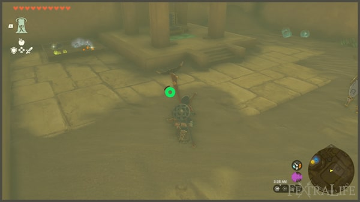
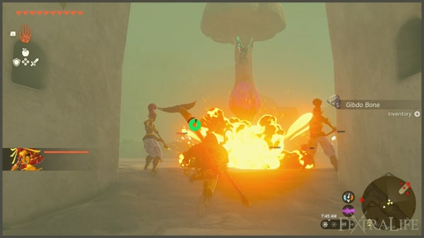
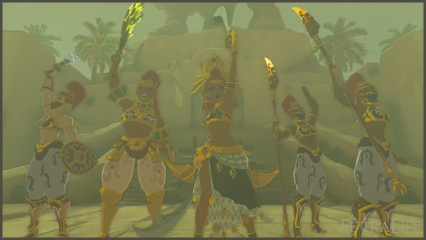
Phá hủy tổ Gibdo (Gibdo Hives)
Tổ Gibdo chính là những cột cát phát sáng tím, nơi Gibdo sinh ra. Cột chỉ phá được khi đang phát sáng: canh đúng lúc rồi dẫn sét của Riju vào.
Dọn hết các tổ ở cả ba cổng thì đợt tấn công chấm dứt, dân thành yên ổn và nhiệm vụ chuyển sang bước giải câu đố.
Solve Riddle of the Sands (Giải câu đố trên bức bích họa)
Riju dẫn bạn tới khu ngầm xem bức bích họa rồi ra giữa bão cát tìm ba khối đá lớn. Dịch chuyển về Đền Thờ Nhỏ Soryotanog rồi lượn tới khối gần nhất.
Ảnh dưới đây là ba khối đá và ba bài giải đố tương ứng; làm xong cả ba thì cơ chế ở giữa ba khối sẽ lộ ra.
Xem ảnh (2)
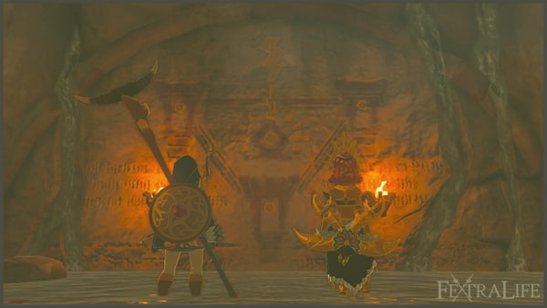
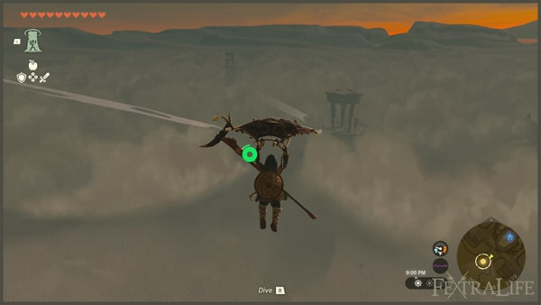
Bài giải đố khối đá 1
Phá sàn của khối đá đầu tiên để lộ nguồn sáng, rồi đi theo luồng sáng sang khối tiếp theo.
Xem ảnh (1)
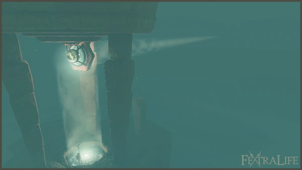
Bài giải đố khối đá 2
Dùng Xuyên lên phần trên khối đá thứ hai, nhìn sang khối bên cạnh có cần hình chữ thập. Lượn sang, quay cần để nâng độ cao khối đá thứ hai, sao cho luồng sáng phản chiếu thành hình tam giác.
Xem ảnh (1)
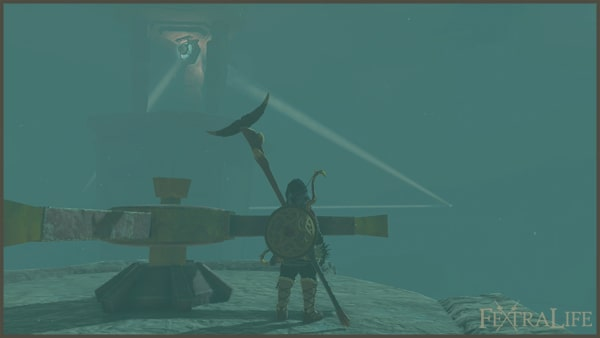
Bài giải đố khối đá 3
Phá sàn khối thứ ba để lấy vật liệu. Việc cần làm là đưa ít nhất một cần gỗ lên đỉnh khối đá: dùng hai Đá Lơ Lửng (Hover Stone) đặt cao dần, Xuyên lên trên rồi dùng Siêu Tay kéo cần gỗ lên, gắn vào máy và quay.
Nên lưu game trước khi làm vì bài này dễ hỏng; xong rồi thì ra giữa ba khối, dùng sét của Riju đánh vào cơ chế để mở Đền Thờ Sấm Sét.
Xem ảnh (3)
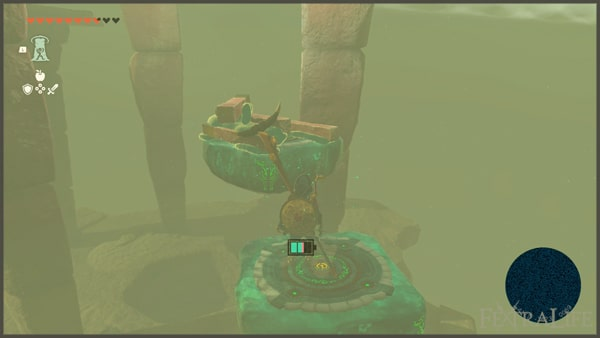
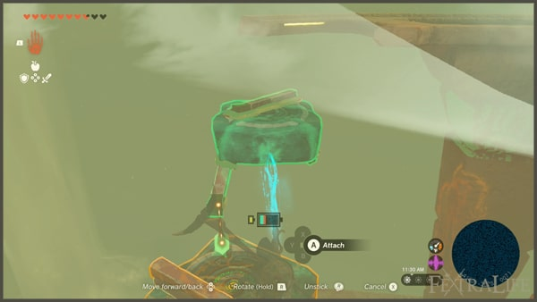
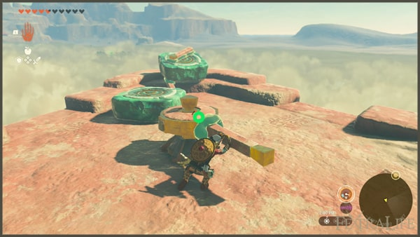
Clear Lightning Temple (Đền Thờ Sấm Sét)
Đền Thờ Sấm Sét dùng sét của Riju để mở đường: chiếu sáng các gương, dẫn sét qua cột, hạ Gibdo và mở các phòng. Trong đền có 4 bình năng lượng phải sạc đủ.
Cuối đền là trận Queen Gibdo. Đánh xong bạn nhận 1 Bình Máu và Lời Thề của Riju, Hiền Giả Sấm Sét.
Xem ảnh (4)
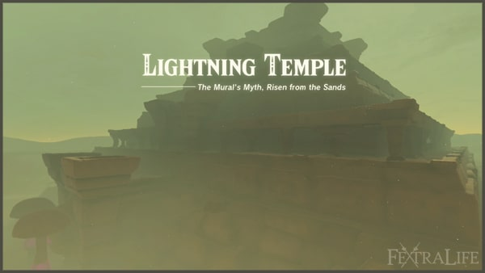
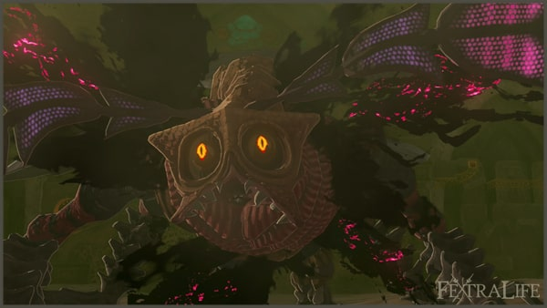
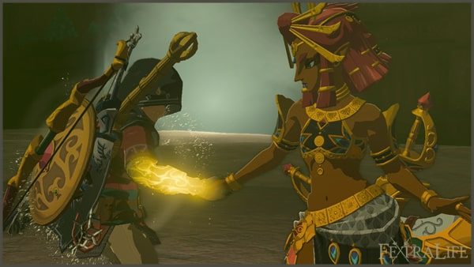
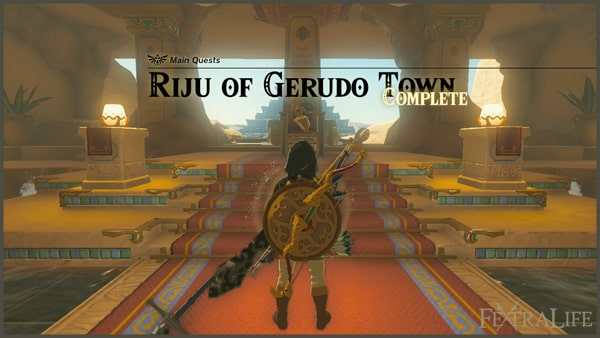
Sạc đủ bốn bình năng lượng
Trong Đền Thờ Sấm Sét có bốn bình năng lượng đặt ở các phòng khác nhau. Muốn sạc, phải dẫn sét của Riju vào từng bình: bắn mũi tên xuyên vòng năng lượng của Riju, hoặc đứng đúng vị trí để tia sét đánh trúng cột dẫn xuống bình.
Sạc đủ bốn bình thì cơ chế giữa đền hoạt động và Queen Gibdo xuất hiện trở lại.
Queen Gibdo trận thứ hai
Trận đầu sau bức bích họa chỉ cần đánh khoảng 30% máu là Queen Gibdo bỏ chạy; lần này cô ta mạnh hơn, gọi thêm Gibdo và có thêm đòn lao.
Cách đánh: phá lớp vỏ bằng sét (dẫn sét của Riju hoặc mũi tên ghép Quả Lửa), sau đó mới đánh thường; canh Né Hoàn Hảo khi cô ta lao tới và dọn Gibdo con trước để không bị quây.
Bình Máu, Lời Thề của Riju và trở về Gerudo Town
Hạ Queen Gibdo xong, nhặt Bình Máu. Một chiến binh cổ xuất hiện kể về Cuộc Chiến Phong Ấn — trận chiến của các thủ lĩnh và Vua Rauru chống lại Demon King, và việc nhà vua hy sinh để phong ấn hắn.
Chiến binh trao lời thề lại cho hậu duệ: Link nhận Lời Thề của Riju (Hiền Giả Sấm Sét), dùng được năng lực của cô ấy bất cứ lúc nào. Quay về Gerudo Town, nhiệm vụ chính Riju of Gerudo Town hoàn thành.
Mẹo chung: vùng này là chuỗi trận đánh — mang nhiều mũi tên (ghép Quả Lửa), nâng cấp giáp trước, và luôn để Riju ở chỗ khuất. Đi sa mạc ban đêm để đỡ phải uống thuốc chống nóng.
Gerudo – Riju: chi tiết hoàn tất, phủ đủ 23 bước của lộ trình.